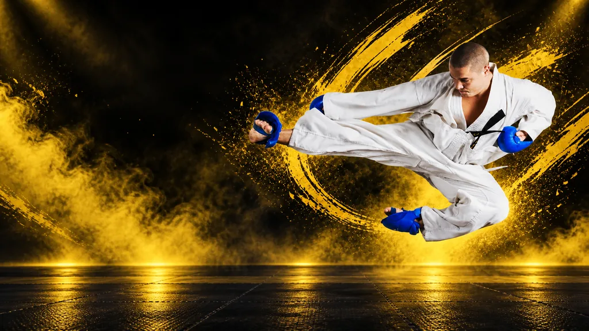
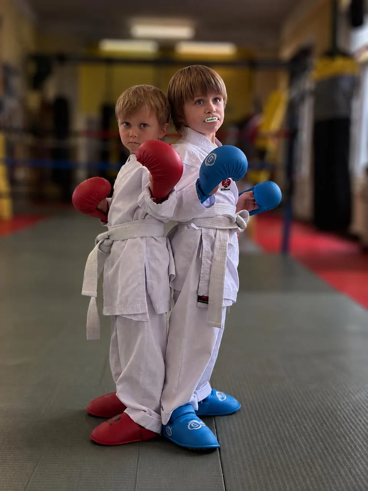
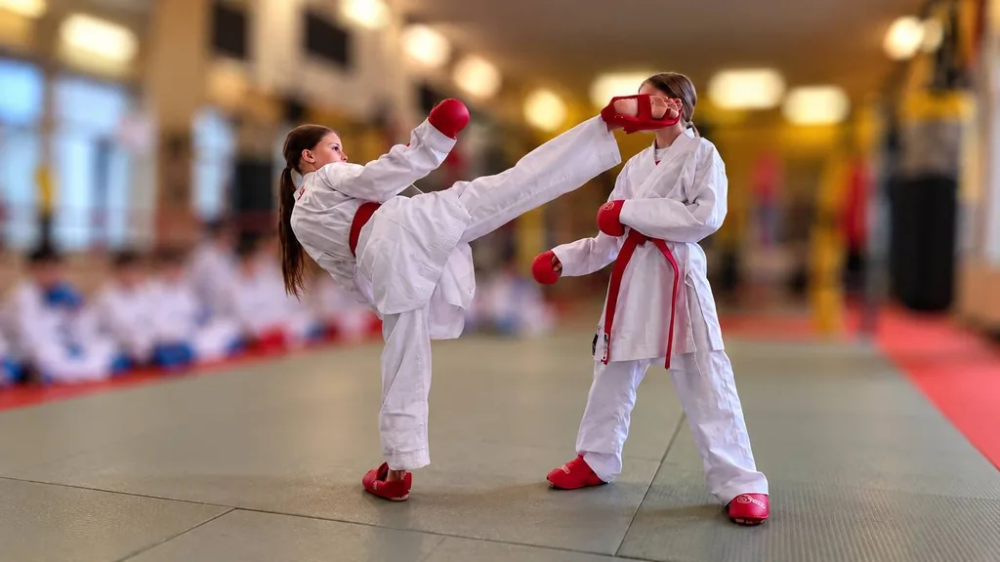
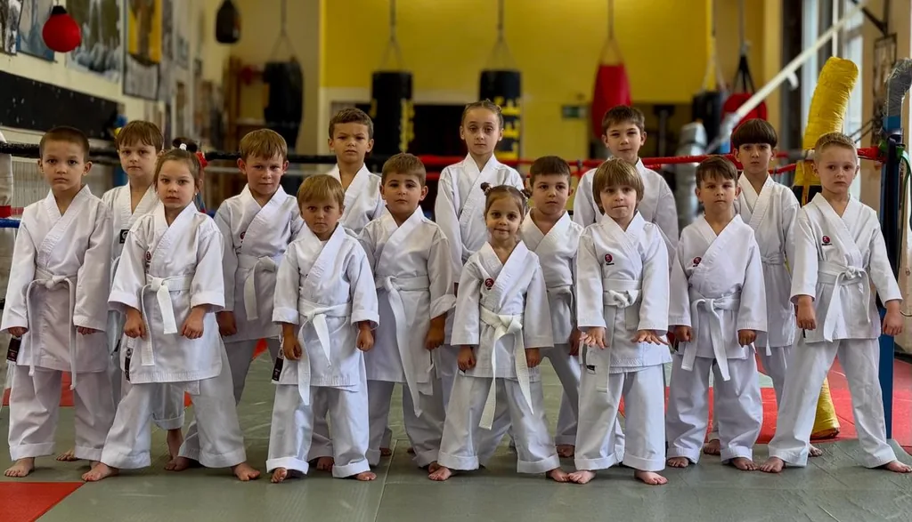
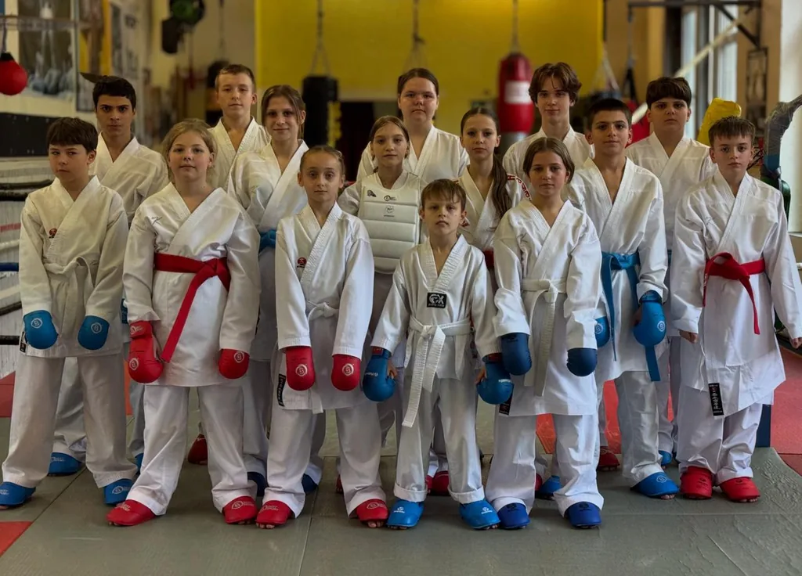
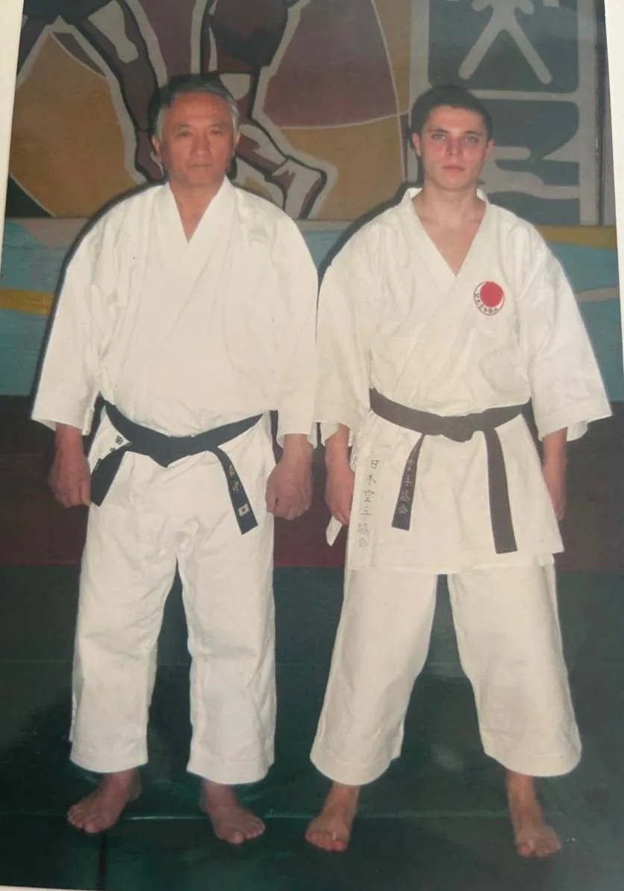
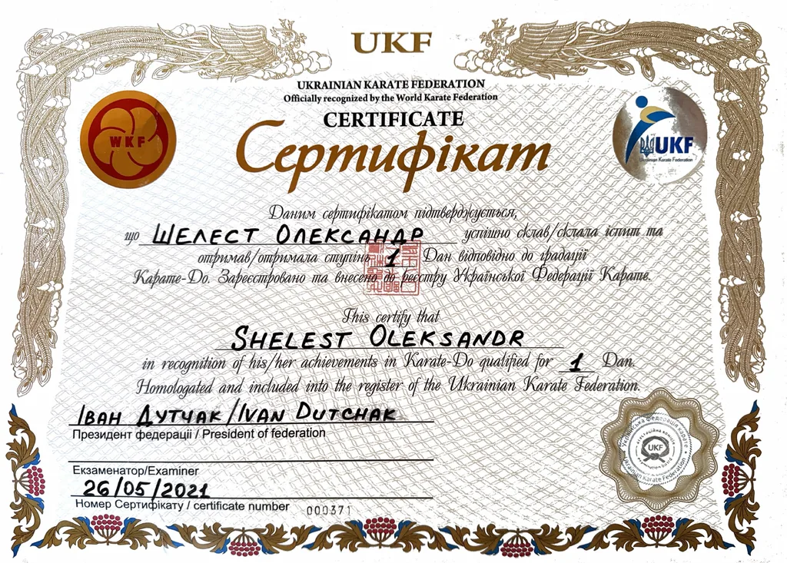
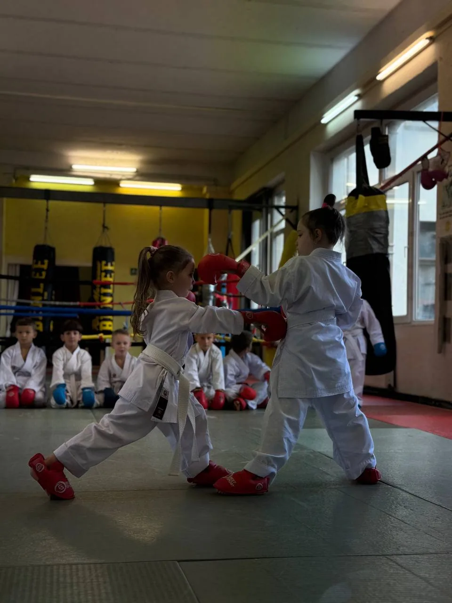

Selbstvertrauen
Kinder lernen, an sich zu glauben und Herausforderungen mutig anzunehmen.
↗
Abwechslungsreiches Training, persönliche Unterstützung und Freude an jedem neuen Erfolg.
BEWEGUNG
FREUDE
ENTWICKLUNG
Wir trainieren Technik. Wir formen Charakter.
Kinder lernen, an sich zu glauben und Herausforderungen mutig anzunehmen.
↗Klare Ziele und regelmäßiges Training schaffen Fokus, Kraft und Ausdauer.
↗Respekt und Unterstützung machen aus einzelnen Schülern eine starke Gemeinschaft.
↗
Unser Kindertraining in Wuppertal verbindet Karate-Technik mit Bewegung, Konzentration und respektvollem Miteinander. Wir berücksichtigen Alter und Trainingsstand und begleiten jedes Kind beim nächsten Schritt. Wer sportliche Ziele verfolgt, kann sich bei uns auch auf Wettkämpfe vorbereiten.
Trainingszeiten ansehen ↗
Karate-Training in der Uellendahler Straße 23, 42107 Wuppertal. Die Zeiten gelten vor Ort in Wuppertal.


Die passende Gruppe stimmen wir nach Alter und Trainingsstand mit Ihnen ab. Bitte vereinbaren Sie das kostenlose Probetraining vorab.
Kostenloses Probetraining ↗Erfahrung seit 1993, pädagogische Ausbildung und persönliche Begleitung jedes Schülers.

Oleksandr Shelest mit Takenori Tanaka · Archivfoto

Das Zertifikat der Ukrainischen Karate-Föderation vom 26.05.2021 bestätigt den 1. Dan auf den Namen Oleksandr Shelest. Es dokumentiert die Registrierung bei der UKF; die erste Dan-Prüfung fand laut seiner Biografie 2004 statt.
Zertifikat ansehen (PDF)Seit 1993 im Karate. Mehr als 20 Jahre Erfahrung als Trainer.
Oleksandr Shelest verbindet über 30 Jahre Karate-Erfahrung mit einer pädagogischen Ausbildung und persönlicher Begleitung seiner Schüler. Im Training stehen saubere Technik, körperliche Entwicklung, Disziplin und Respekt im Mittelpunkt.
Sein Ziel ist, Kindern neben Karate-Technik auch Selbstvertrauen, Willenskraft und Ausdauer zu vermitteln. Jeder Schüler soll lernen, Herausforderungen anzunehmen und sich Schritt für Schritt weiterzuentwickeln.
Karate ist ein Weg zu Selbstdisziplin, Respekt und stetiger Weiterentwicklung.
Training. Wettkampf. Gemeinschaft.
Lernen Sie die Karateschule Shelest kennen und finden Sie heraus, ob unser Kindertraining zu Ihrem Kind passt. Das Probetraining ist kostenlos. Den Termin stimmen wir vorab mit Ihnen ab.
Schreiben Sie uns über WhatsApp oder rufen Sie an. Nennen Sie das Alter Ihres Kindes und seine bisherige Karate-Erfahrung.
Wir trainieren montags, mittwochs und freitags: jüngere Gruppe um 17:00 Uhr, ältere Gruppe um 18:00 Uhr. Vereinbaren Sie die passende Gruppe vorab.
Nutzen Sie das kostenlose Probetraining, um einen Eindruck von unserem Training zu bekommen und Ihre Fragen zu stellen.
Das Probetraining ist kostenlos. Die Beiträge für regelmäßiges Training erfahren Sie im persönlichen Kontakt.
Vereinbaren Sie zuerst ein Probetraining über WhatsApp oder telefonisch unter +49 157 30872694. Geben Sie das Alter Ihres Kindes und seine Vorerfahrung an.
Wir berücksichtigen Alter und Trainingsstand. Fragen Sie uns, welche Gruppe zu Ihrem Kind passt und wann ein Einstieg möglich ist.
Uellendahler Straße 23, 42107 Wuppertal. Montag, Mittwoch und Freitag: jüngere Gruppe um 17:00 Uhr, ältere Gruppe um 18:00 Uhr. Bitte stimmen Sie das Probetraining vorab mit uns ab.
Karate-Technik, Bewegung und ein respektvolles Miteinander gehören zusammen. Wir begleiten jedes Kind persönlich und fördern seine Freude am Sport.
Ja. Für Kinder mit sportlichen Zielen bieten wir die Möglichkeit, sich auf Wettkämpfe vorzubereiten und ihre Technik und körperliche Vorbereitung weiterzuentwickeln.
Sie finden unseren Trainingsort in der Uellendahler Straße 23. Vereinbaren Sie Ihr kostenloses Probetraining über WhatsApp oder telefonisch.
Montag · Mittwoch · Freitag
17:00 — Jüngere Gruppe
18:00 — Ältere Gruppe

Kostenloses Probetraining für Ihr Kind — Termin nach Absprache.
WhatsApp schreiben ↗Anrufen: +49 157 30872694